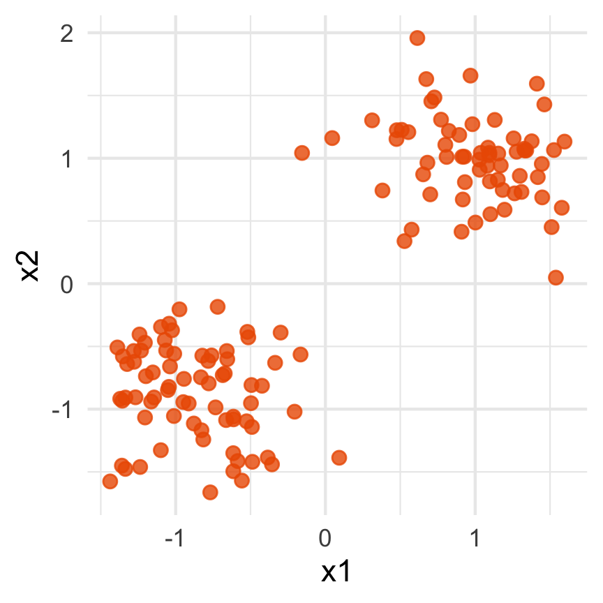
Shadows of Data
Visualising the Geometry of High Dimensions
1D projections to see 2D

Data is 2D:
Projection is 1D:
Notice that the values of change between (-1, 1). All possible values being shown during the tour.
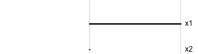 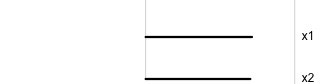 
watching the 1D shadows we can see:
- unimodality
- bimodality, there are two clusters.
What does the 2D data look like? Can you sketch it?

2D projections to see 4D

Data is 4D:
Projection is 2D:
How many clusters do you see?
- three, right?
- one separated, and two very close,
- and they each have an elliptical shape.
- do you also see an outlier or two?

Species explains the three clusters.
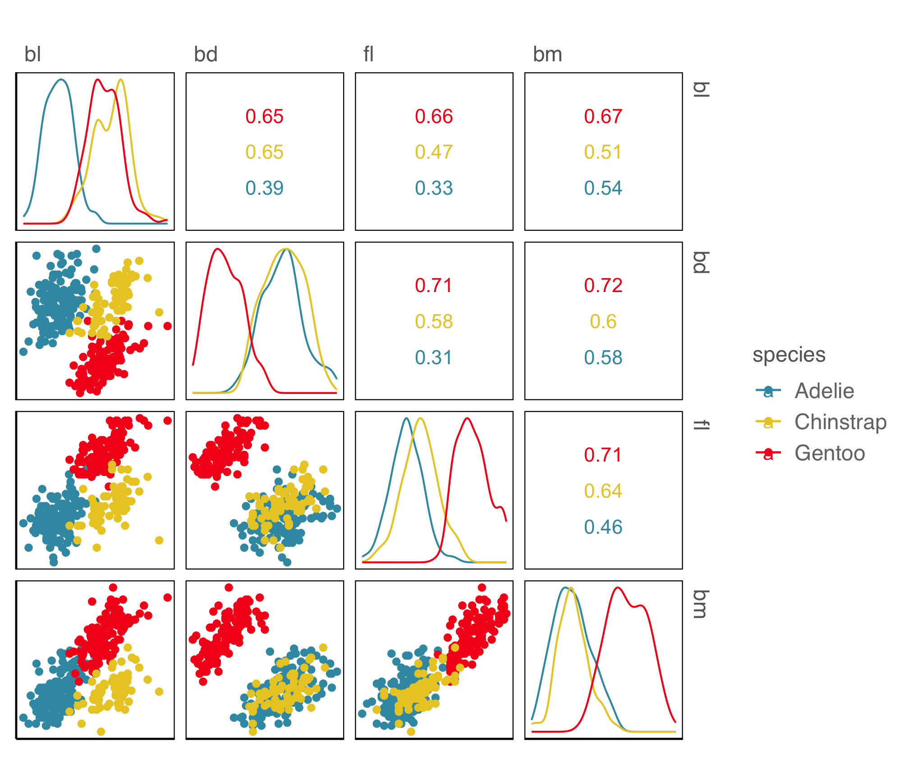
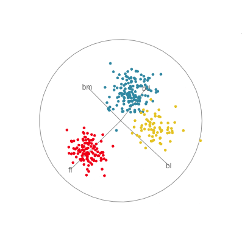
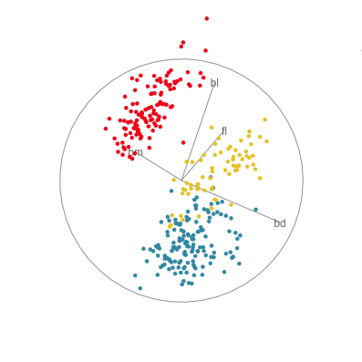
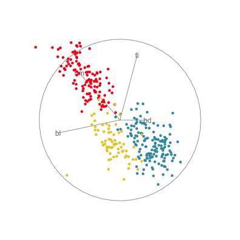
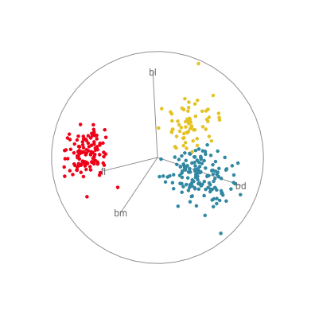
Algorithms in the tourr package

Tours have two main components: How to move over the space, and how to display the projected data.
Movement
- choice of target planes
- grand: random
- guided: objective function
- local: nearby
- little: marginals
- manual/radial: specific variable
- interpolation between them
- geodesic: plane to plane (Grassmann manifold)
- Givens: frame/basis to frame/basis (Stiefel manifold)
Display
How should you plot your projected data?
- 1D: density, dotplot, histogram
- 2D: scatterplot, density2D, sage, pca, slice
- 3D: stereo
- kD: parallel coordinates, scatterplot matrix
- 1D+spatial: image
Early tour algorithms


Grand tour: see from all sides

Guided tour: Steer towards the most interesting features.
Slice
Utilise distance from the projection plane to make the slice, and shift centre of projection plane.


Slice tour


Sage transformation (1/2)

As number of variables increase concentration in centre of projection increases. Great for studying distribution of means (Central Limit Theorem) but bad for visualising high-dimensional data. Possibly obscures interesting structure.
Sage transformation (2/2)
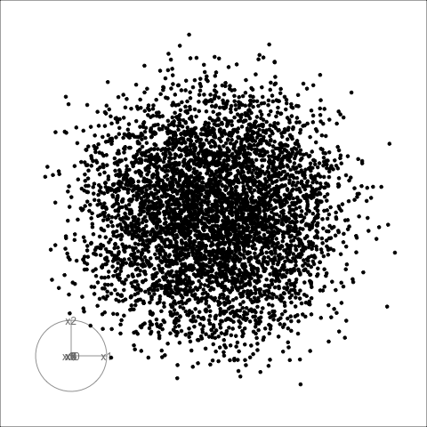
2D projections of 10D sphere
Givens interpolation (1/2)


TARGET BASIS (would show dog if we could find)
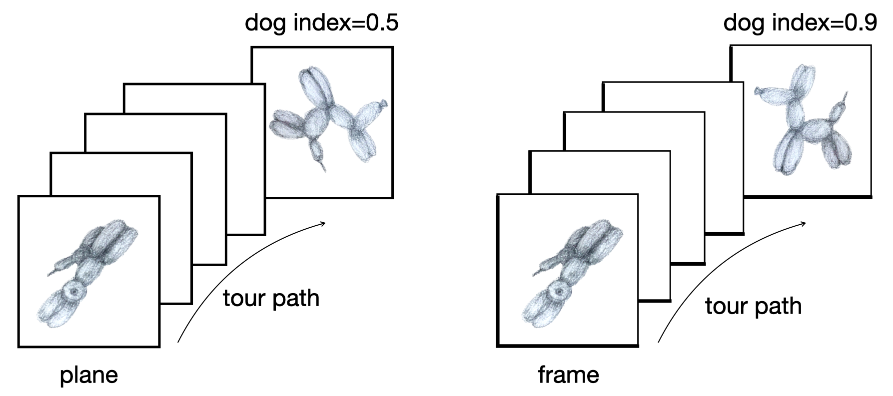
Manual/radial tour
Best projection provided by the guided tour, separating three species.
Removing flipper length
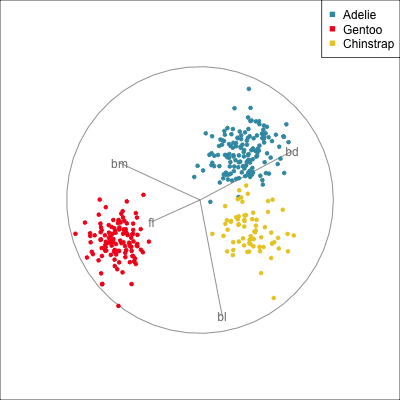
Removing bill length

Games: Hiding in high-d
Code
library(tidyverse)
library(tourr)
library(GGally)
set.seed(946)
d <- tibble(x1=runif(200, -1, 1),
x2=runif(200, -1, 1),
x3=runif(200, -1, 1))
d <- d %>%
mutate(x4 = x3 + runif(200, -0.1, 0.1))
d <- bind_rows(d, c(x1=0, x2=0, x3=-0.5, x4=0.5))
d_r <- d %>%
mutate(x1 = cos(pi/6)*x1 + sin(pi/6)*x3,
x3 = -sin(pi/6)*x1 + cos(pi/6)*x3,
x2 = cos(pi/6)*x2 + sin(pi/6)*x4,
x4 = -sin(pi/6)*x2 + cos(pi/6)*x4)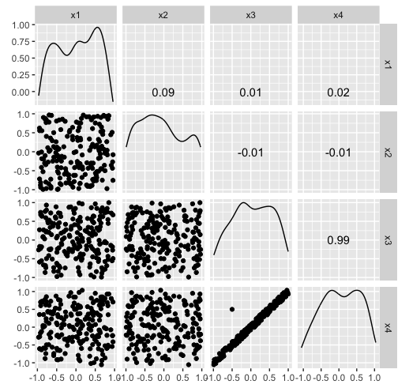

Code
library(tidyverse)
library(tourr)
library(GGally)
set.seed(946)
d <- tibble(x1=runif(200, -1, 1),
x2=runif(200, -1, 1),
x3=runif(200, -1, 1))
d <- d %>%
mutate(x4 = x3 + runif(200, -0.1, 0.1))
d <- bind_rows(d, c(x1=0, x2=0, x3=-0.5, x4=0.5))
d_r <- d %>%
mutate(x1 = cos(pi/6)*x1 + sin(pi/6)*x3,
x3 = -sin(pi/6)*x1 + cos(pi/6)*x3,
x2 = cos(pi/6)*x2 + sin(pi/6)*x4,
x4 = -sin(pi/6)*x2 + cos(pi/6)*x4)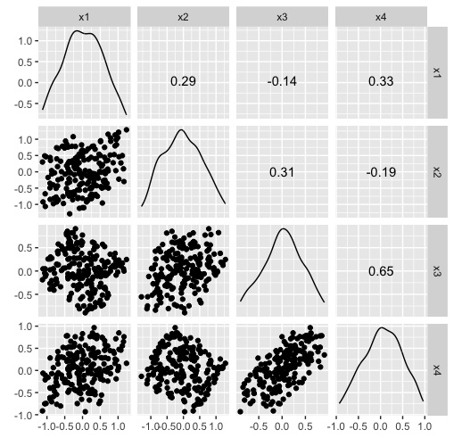

Dimension reduction
Principal component analysis
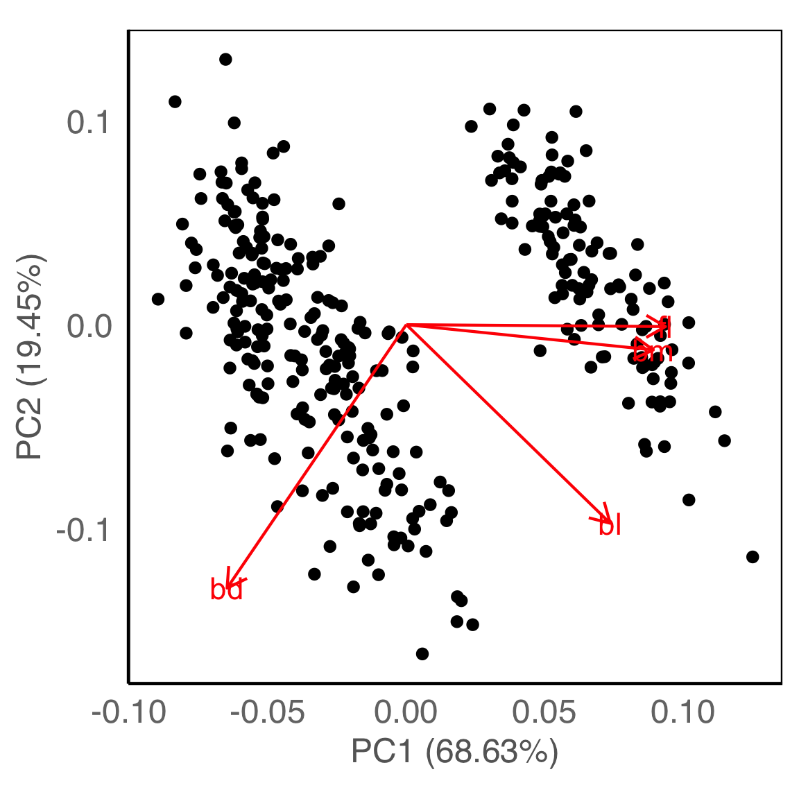
NLDR: t-Stochastic neighbourhood embedding
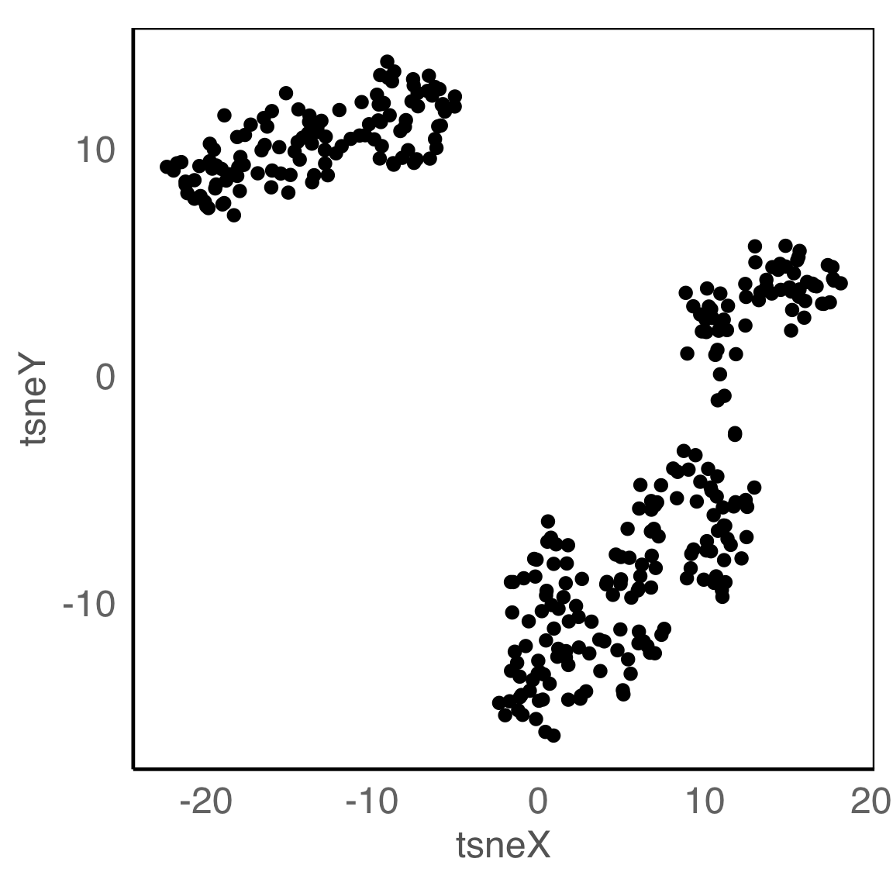
Data in the model space
Model in the data space
Code
library(mulgar)
p_pca_m <- pca_model(p_pca, s=2.2)
p_pca_m_d <- rbind(p_pca_m$points, penguins_sub[,1:4])
p_pca_m_d_clr <- c(rep("#EC5C00", 4),
rep("black", nrow(penguins_sub)))
animate_xy(p_pca_m_d, edges=p_pca_m$edges,
axes="bottomleft",
col=p_pca_m_d_clr,
edges.col="#EC5C00",
edges.width=3)
render_gif(p_pca_m_d,
grand_tour(),
display_xy(half_range=4.2,
col=p_pca_m_d_clr,
edges=p_pca_m$edges,
edges.col="#EC5C00",
edges.width=3),
gif_file="gifs/p_pca_model.gif",
frames=500,
width=400,
height=400,
loop=FALSE)
Data in the model space
Model in the data space

https://doi.org/10.48550/arXiv.2506.22051
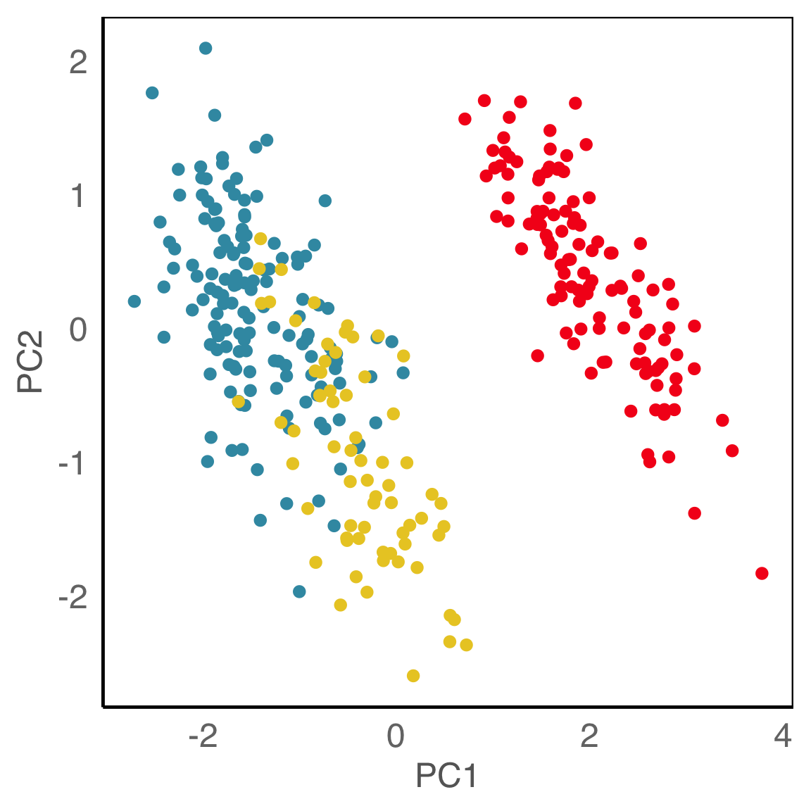
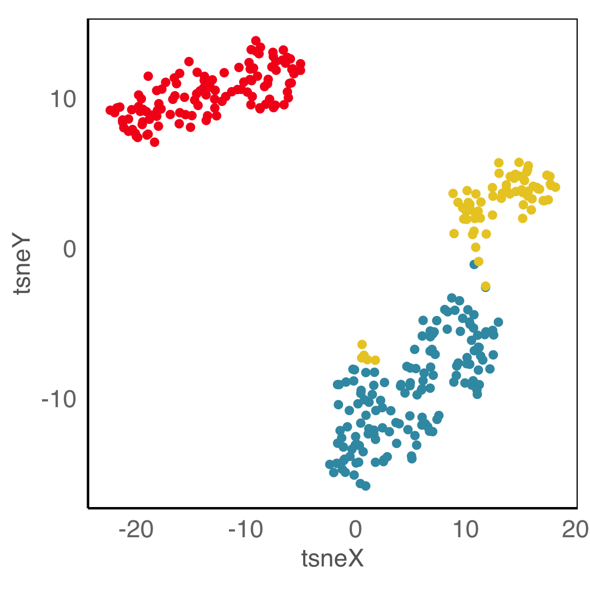
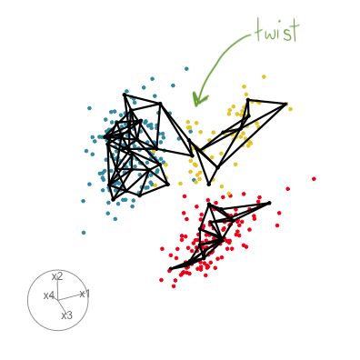
Exploring boundaries
The slice tour is especially useful for exploring classification models, comparing boundaries produced by different models. (The same penguins data used here.)
Linear discriminant analysis

Classification tree

Linear discriminant analysis
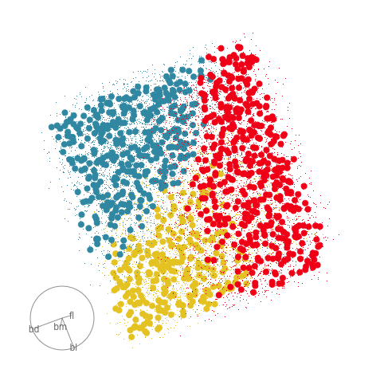
Classification tree
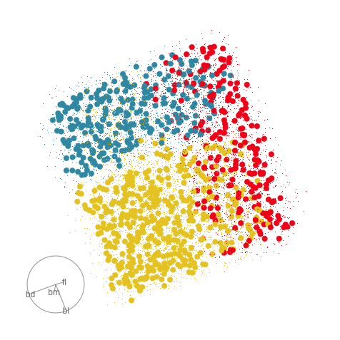
Understanding clustering (1/2)
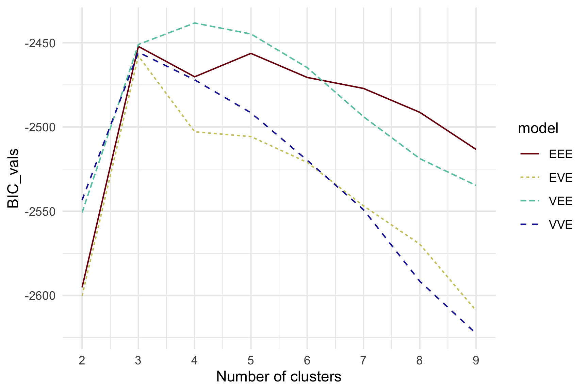
Best model: four-cluster VEE

Three-cluster EEE

Deconstructing neural networks

Example: MNIST fashion
10 fashion items, 60000 training 28x28 images
Model fitted as described in keras tutorial.
Single hidden layer with 128 nodes, which reduces the 28x28= 784-dimensional space to 128-dimensional space.
What does this dimension reduction do for the classification?
Principal components is the usual way to manage constructing a smaller number of dimensions to view the data.
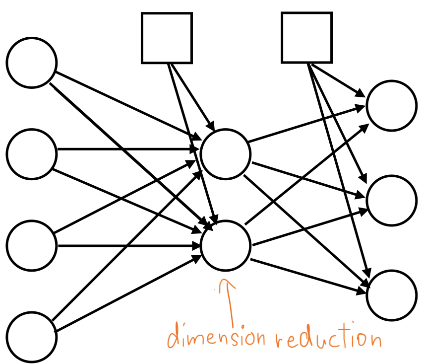
Feedforward back-propagation model
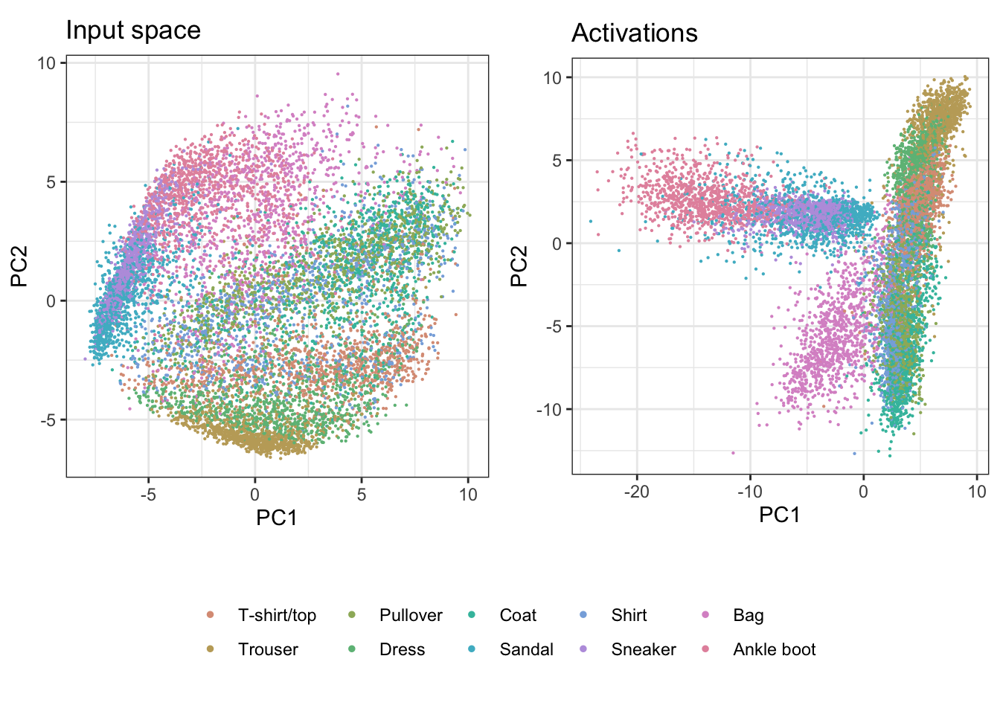
Input space

Activations

High-dimensional ternary diagrams
If you have more than three components in a compositional data set, the data falls inside a simplex, of more than 2D.
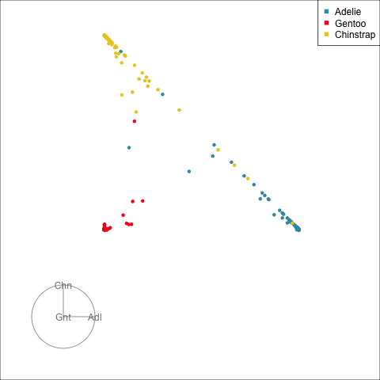
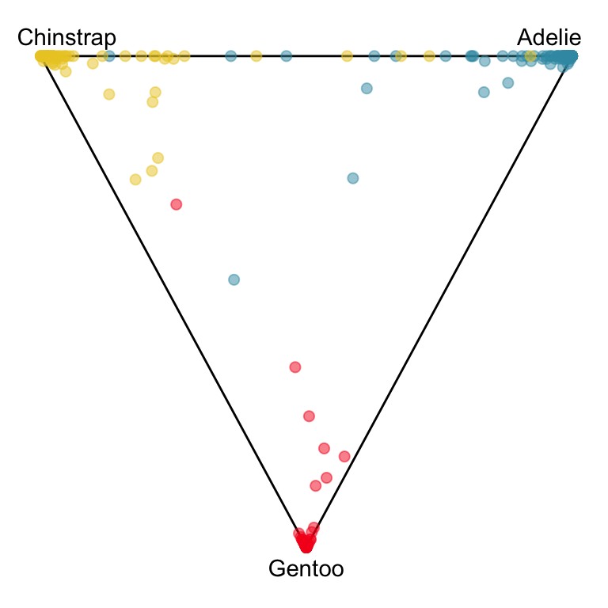

Each component forms one vertex of the simplex. Points
- at vertices are certain predictions
- far from their vertex are uncertain, likely confused
- along an edge are confused between two groups only
- along a face are confused between three groups
Helps to understand uncertainty in predictions more than is possible with a confusion matrix.
References and acknowledgements
- Cook and Laa (2023) Interactively exploring high-dimensional data and models in R
- Wickham et al (2015) Visualizing statistical models: Removing the blindfold
- Flatland: A Romance of Many Dimensions (1884) Edwin Abbott
- R packages: tourr, woylier, detourr, liminal, langevitour, lionfish, geozoo.
Slides made in Quarto, with code included.

This work is licensed under a Creative Commons Attribution-ShareAlike 4.0 International License.